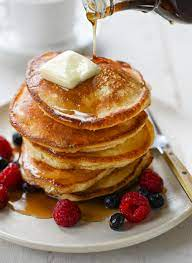

Pancakes

A pancake (or hotcake, griddlecake, or flapjack, not to be confused with oat bar flapjacks) is a flat cake, often thin and round, prepared from a starch-based batter that may contain eggs, milk, and butter and cooked on a hot surface such as a griddle or frying pan, often with oil or butter. Archaeological evidence suggests that pancakes were probably the earliest and most widespread cereal food eaten in prehistoric societies.
Ingredients
- 1 1/2 cups all-purpose flour
- 3 1/2 teaspoons baking powder
- 1 teaspoon salt
- 1 tablespoon white sugar
- 1 1/4 cups milk
- 1 egg
- 3 tablespoons butter, melted
Steps
- In a large bowl, sift together the flour, baking powder, salt and sugar. Make a well in the center and pour in the milk, egg and melted butter; mix until smooth.
- Heat a lightly oiled griddle or frying pan over medium high heat. Pour or scoop the batter onto the griddle, using approximately 1/4 cup for each pancake. Brown on both sides and serve hot.